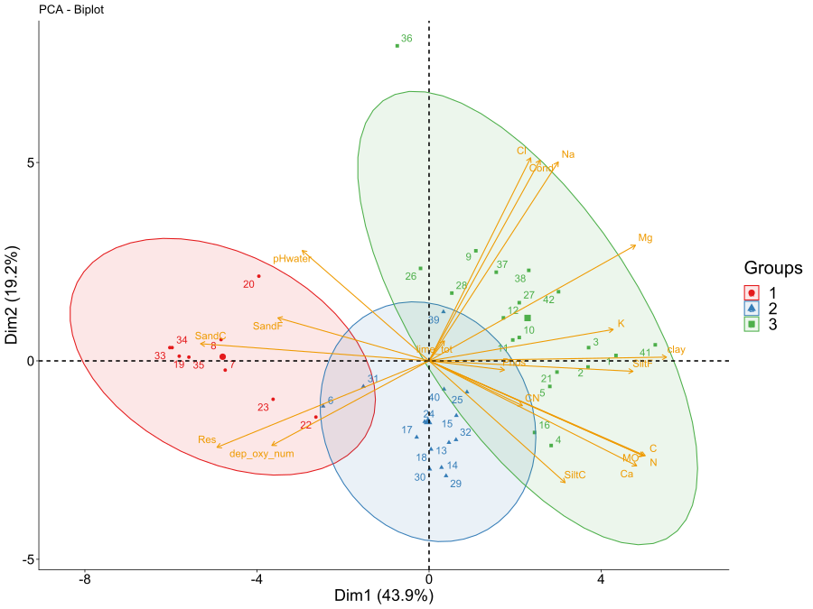

Landscape effect
Estimate a buffer size of landscape effect on plant and viral richness
The idea :
The main objective of this part is to find a way to estimate a buffer radius around grids in which landscape could have the most impact on plants richness, viral richness or any others variables that we want to explain. For that, we will use the package Siland. It uses a form of a general linear model for spatial variables.
Hypothesis
1- Environmental variables that mainly structure the environment are salinity concentration and flooding potential. They are diven by distance from the sea. 2- Because grids are for the majority old, communities of plant should be resistant to external invasion in suhca way that Landscape has no effect on species richness (when environmental variance is considered).
Implementation
The main complexity is that the landscape cover types and environmental variables are strongly collinear (eg. it is more likely to find agricultural lands in fertile soil with low salt concentration). We must account for variance explained by environmental factors before trying to explain it with the landscape. It can be done easily with the Siland function because it accounts for local effects (aka environmental variables) with a classic linear part and a spacial effect part (aka landscapes). The main issue with this is that there are too many environmental and landscape parameters to account for (more than 20 env variables + one cover type = one parameter \(\Rightarrow\) more than 25 variables for 42 observations). If we give the model all environmental parameters adding over landscape parameters, there is a strong risk of over-fitting our richness or having problems with the convergence of all parameters. To avoid that we must select in advance environmental parameters that account for the most variation of the explained variable. The first option is to compute a PCA of environmental factors and then use the axis that explains the most variation of environmental conditions as co-variable of the spacial model. The Siland model will thus attribute a part of the variance to a linear combination of multiple environmental variables and then search for the remaining variance explained by landscape variables (I’m not fully sure of that because of the loop for parameter convergence …). This is a good way to reduce the variables in the landscape model. However, the PCA doesn’t select necessarily environmental variables that explain the most variance in the response variable. Thus, using this method, we assume that the environmental variables that vary the most in the study area have the highest contributions to the variance of the explained variable. (This is a strong hypothesis that we must assume 🥵, but it is not completely bad because it is honest to assume a priori that richness will vary along those main gradients). The second idea is to use a classic glm with all explanatory environmental variables and then use the residuals of this model as variables to explain. This method doesn’t make the strong hypothesis of the first one, but it looks like what we wanted to avoid in the first place: over-fitting and convergence issues. So for now we will stick to the PCA
Method
Data
The data has been collected in South France at the Tour du Valat’s natural reserve (43° 30′ 30″ N, 4° 40′ 01″ E). There are in total 42 grids of 10m² each one composed of 9 quadra of 20 cm², these latter are distributed in an X shape form in grids. In each quadra an exhaustive identification of plant richness has been done and an estimation of bacterial, fungal, and viral communities of the phyllosphere. Species cover, soil cover (Plant, Litter, Bare Soil) and biomass have also been collected for plants at the quadra scale. Environmental variables have been sampled 3 times (in random locations?) per grid and averaged to limit measure errors. Soil occupation shapefile comes from the regional database of soil occupation of PACA and was collected in 2016 [OCSOL 2016].
–Environmental variables not integrated for now We also have information on grazing and mowing in the plots [database ?] and on grazing intensity [database ?]. For meteorological data, we have hydrometry between 2018 and 2022 from [database?] –
We have grouped the land-use data into 5 classes: Wetlands are made up of lands that have periods of submergence and can be slightly anthropized (pasture); Non-emitting propagules contain landscapes that are very unlikely to emit propagules that could colonize the salt meadow (e.g. forests, beaches or areas of permanent water); natural landscapes contain lightly anthropized (pasture) land that does not feature in the previous two classes; artificial landscapes contain all types of heavily anthropized cover, such as urban areas or roads, these covers are those that could be of great importance for the import of exotic organisms; cultivated lands are the one used for plantations, such as rice or forage crops.
Analysis
To compute optimal buffer radii of soil occupation that affects plant (or viral richness later) we used the package Siland (Carpentier and Martin 2021). The model has 2 distinct components: a classic regression part with an intercept and estimators for each variable and a regression part on the spatial component. To summarize, the model tries to minimize the log-likelihood \([y|\theta]\) of 3 parameter types; parameters for size effects of local variables (\(\alpha_l\)), parameters for sizes effects of each cover type ( \(\beta_k\)), parameters for the shape of the curve of each cover type (\(\delta_k\)).
\[ Y = \mu +\sum_L\alpha_l X+ \sum_K\beta_k\sum_R f_{\delta_k}(d_{i,r})z_r^k \]
\(L\): index of observation point (grids); \(K\): index of cover type; \(R\): landscape mesh index. If the landscape variable \(k\) is a presence/absence variable, \(z_r^k\) is equal to one or zero. \(f_{\delta_k}\) Spacial Influence Function (gauss, expo or uniform)
Maximization algorithm of Siland :

To avoid catching part of the variance induced by environmental variables we first compute a PCA to extract the axis that represents most of the variance of environmental condition. We then use those linear combinations of environmental variables as descriptors of the local grid’s conditions. The model contains in total 8 variables, 3 local variables extracted from the PCA and 5 covers types variables. The model uses a Gaussian function for the landscape effect and uses a Poisson error family. To validate the good convergence of buffer radii, we checked visually that the log-likelihood of all Spatial Influence Functions (SIF) have a minimum that intersects the overall minimal log-likelihoods of the model (as prescribed by the author of the package). Finally, a bootstrap of the local explain variable (eg. richness) coupled with their local explanatory variables (eg. Dim of PCA) is done to assess that the landscape has a statistical significance.
Results
PCA

The first axis which accounts for 43.9% of the variation is explained mostly by soil structure and soil fertility. On the left of the PCA the prominent environmental conditions are the presence of sand (Fine or Coarse) and an absence of organic and mineral materials. On the right soil is more fertile with a lot of clay, silt and organic materials. This axis might be highly correlated to the distance from the sea. The second axis represents the saline gradient, on the top the most salted area and on the bottom the least salted. This axis might be correlated with terrain topography.
Group 1 in red represents a grid with low fertility, they should be located close to the sea because of the important quantity of sand. Group 2 in blue represents grids with a low salt concentration, the cause of this low concentration might be a consequence of topological factors. Group 3 represents grids that are mostly far away from the sea with fertile soil, but the topography might bring the water table closer to the surface, which increases the salt concentration.
| Dim.1 (43.9%) | Dim.2 (19.2%) | Dim.3 (11.5%) | |
|---|---|---|---|
| clay | 9.6 | 0.0 | 1.8 |
| SandC | 8.9 | 0.1 | 6.8 |
| N | 7.9 | 4.1 | 3.9 |
| MO | 7.8 | 4.1 | 5.6 |
| C | 7.8 | 4.1 | 5.6 |
| Res | 7.6 | 3.4 | 1.0 |
| Ca | 7.3 | 5.0 | 2.1 |
| Mg | 7.2 | 6.1 | 1.3 |
| SiltF | 7.1 | 0.0 | 13.4 |
| K | 5.7 | 0.4 | 4.9 |
| dep_oxy_num | 4.2 | 3.3 | 2.7 |
| SandF | 3.9 | 0.8 | 2.3 |
| SiltC | 3.1 | 6.7 | 0.4 |
| Na | 2.8 | 18.0 | 0.3 |
| pHwater | 2.7 | 5.5 | 0.6 |
| Cond | 2.1 | 18.3 | 0.1 |
| Cl | 1.8 | 18.7 | 0.0 |
| CN | 1.5 | 0.9 | 10.6 |
| Phos | 1.0 | 0.0 | 1.6 |
| lime_tot | 0.0 | 0.2 | 34.9 |

The map confirms our observation on the PCA. The red group is closer to the sea and the green group is further inland. There is one exception with grid 36, it might be located in between dunes because the water table is almost at the surface and salt concentration is high, this could explain why this grid is in the group defined by high salt concentration. Blue grids are mostly located far from the sea which could explain the low salt concentration, but as we can see with the green group this is not a good predictor for high salt concentration so the remaining explanation is again the topography.
Siland
Null model formula : Richness_grid ~ 1
No landscape model formula : Richness_grid ~ Dim.1 + Dim.2 + Dim.3
Complete model formula : Richness_grid ~ Dim.1 + Dim.2 + Dim.3 + wetland + non_emitting + cultivated + natural_landscape + artificial
The null model has an AIC = 550, no landscape model has an AIC = 525 and the Full model has an AIC = 342 No landscape model has a pseudo R² = 9% and the Full model has an pseudo R² = 65%
| Variable | Estimate | Std. Error | Pr(>|z|) |
|---|---|---|---|
| (Intercept) | -4.0 | 0.8 | > 1e-4 *** |
| Dim.1 | -0.1 | 0.0 | > 1e-4 *** |
| Dim.2 | -0.2 | 0.0 | > 1e-4 *** |
| Dim.3 | -0.3 | 0.0 | > 1e-4 *** |
| landscape effects | |||
| wetland | 8.3 | 0.8 | > 1e-4 *** |
| non_emitting | 5.6 | 0.8 | > 1e-4 *** |
| cultivated | 6.9 | 0.9 | > 1e-4 *** |
| natural_landscape | 5.6 | 0.7 | > 1e-4 *** |
| artificial | 8.8 | 1.4 | > 1e-4 *** |


95% of the influence for each landscape (95 percentiles of each SIF) are 448 m for wetlands, 528 m for non-emitting lands, 311 m for cultivated lands, 285 m for natural landscapes and 305 m for artificial land (they are not shown on the Figure 3 (b).
Bootstrap
Not working as intended, every (or at least the majority) models that use bootstrapped data never converge properly.
Conclusion
We’ve seen that the environmental condition of our study area is mainly structured along 2 gradients. The first one is the distance from the sea which has the consequence of modifying the soil texture and fertility. The second is salt concentration which is probably induced by topography.
(preliminary idea/interpretation, not super robust, keep in mind that the explain richness variance by the 3 dimension is only 9%) Species richness is negatively impacted by Dim.1 and Dim.2 of the PCA (also Dim.3 but I don’t know how to interpret it for now), this is strange because, for the first dimension, this means that less fertile grid are richer than more fertile one. For the second dimension, this means that grids with higher salt concentrations are richer than the ones with lower salt concentrations(Table 2, Figure 1 and Figure 2). So more stress equal more species. This pattern might be caused by an over-representation of agriculture in fertile/low-salinity soil (unlikely because grids aren’t dispatched in cultural areas). Or it can also result from high stress (need a bit of bib here) \(\Rightarrow\) in which coexistence scenario does high-stress result in more richness? Or cover type has a really strong effect, grids close to agricultural land receive less species capable of persistence ? or receive fertilizer through soil leaching (check abundance of fabacea and fast growing species) ? Both can cause a reduction of species richness. Further analysis need to be done to see if those tendency are real or not.
Landscapes affect plant richness in a maximum radius range of approximately 300 m to 550 m depending on the cover type in the Camarague lands (Figure 3 (b)). Artificial lands and wetlands have the most important impact and the longer distance of impact on the species richness while non-emitting, cultivated and natural landscapes have less influence and a shorter distance of impact. With this model we conclude that landscape has an impact on species richness when environmental variables are considered, so we reject our second hypothesis. However the assumption that the 3 fist axis of the PCA explain well the richness is not well supported when we look at the pseudo R² of our model. So there is 2 options : the richness variance is explain mostly by landscape or second option, we didn’t capture environmental gradient that explain richness in the PCA. Anyway the objective of this part was to evaluate a buffer radius where landscape could have an effect. Now With this information we will extract percentage cover, landscape diversity or other landscape descriptor in a radius of 500 m around grids and make further analysis.